Lab 3: MAUP in Practice — Tessellations and Point-in-Polygon
National Dam Inventory (NID): From Counts to Local Clustering
Background
In this lab we will explore the impacts of tessellated surfaces and the modifiable areal unit problem (MAUP) using the National Dam Inventory maintained by the United States Army Corps of Engineers. The work requires writing reusable functions and careful consideration of feature aggregation/simplification, spatial joins, and data visualization. The end goal is to visualize the distribution of dams and their purposes across the country.
DISCLAIMER: This lab can be computationally intensive. For some steps you may be processing hundreds of millions of relations; run code chunk-by-chunk during development rather than knitting the whole document repeatedly. Your final knit may take a few minutes. Be proud — the report will summarize analyses over very large geometric relations.
This lab covers 4 main skills:
- Tessellating surfaces to discretize space
- Geometry simplification to expedite expensive intersections
- Writing functions to automate repetitive reporting and mapping tasks
- Point-in-polygon counts to aggregate point data
Graduate-Level Expectations
In addition to producing correct code and outputs, your submission should:
- Justify methodological choices: Why did you choose a particular tessellation
keeppercentage for simplification? How did you balance computational efficiency with map detail? - Document performance impacts: Measure and report computation time and geometric accuracy changes resulting from simplification. How do results differ?
- Apply spatial reasoning: Use spatial predicates (e.g.,
st_touches,st_contains) to identify and describe geometric relationships in the dam dataset that raw counts cannot reveal. - Compare across methods: When multiple tessellation approaches yield different clustering patterns, explain which pattern better supports real-world dam management decisions and why.
- Connect to lecture: Explicitly cite the MAUP problem, simplification algorithms (Douglas-Peucker vs. Visvalingam), and spatial predicate definitions from week 3 lectures in your analysis.
Libraries
Question 1:
Here we will prepare five tessellated surfaces from CONUS and write a function to plot them in a descriptive way.
Step 1.1
First, we need a spatial file of CONUS counties. For future area calculations we want these in an equal area projection (EPSG:5070).
To achieve this:
get an
sfobject of US counties (AOI::aoi_get(state = "conus", county = "all"))transform the data to
EPSG:5070
Code
counties <- AOI::aoi_get(state = "conus", county = "all") |>
st_transform(5070)Step 1.2
For triangle based tessellations we need point locations to serve as our “anchors”.
To achieve this:
generate county centroids using
st_centroidSince, we can only tessellate over a feature we need to combine or union the resulting 3,108
POINTfeatures into a singleMULTIPOINTfeatureSince these are point objects, the difference between union/combine is mute
Code
county_points <- counties |>
st_centroid() |>
st_union()Step 1.3
Tessellations/Coverage’s describe the extent of a region with geometric shapes, called tiles, with no overlaps or gaps.
Tiles can range in size, shape, area and have different methods for being created.
Some methods generate triangular tiles across a set of defined points (e.g. Voronoi and Delaunay triangulation)
Others generate equal area tiles over a known extent (st_make_grid)
For this lab, we will create surfaces of CONUS using using 4 methods, 2 based on an extent and 2 based on point anchors:
Tessellations :
st_voronoi: creates a Voronoi tessellationst_triangulate: triangulates a set of points (not constrained)
Coverages:
st_make_grid: creates a square grid covering the geometry of an sf or sfc objectst_make_grid(square = FALSE): creates a hexagonal grid covering the geometry of an sf or sfc objectThe side of coverage tiles can be defined by a cell resolution or a specified number of cell in the X and Y direction
For this step:
- Make a voroni tessellation over your county centroids (
MULTIPOINT) - Make a triangulated tessellation over your county centroids (
MULTIPOINT) - Make a gridded coverage with n = 70, over your counties object
- Make a hexagonal coverage with n = 70, over your counties object
In addition to creating these 4 coverage’s we need to add an ID to each tile.
To do this:
add a new column to each tessellation that spans from
1:n().Remember that ALL tessellation methods return an
sfcGEOMETRYCOLLECTION, and to add attribute information - like our ID - you will have to coerce thesfclist into ansfobject (st_sforst_as_sf)
Last, we want to ensure that our surfaces are topologically valid/simple.
To ensure this, we can pass our surfaces through
st_cast.Remember that casting an object explicitly (e.g.
st_cast(x, "POINT")) changes a geometryIf no output type is specified (e.g.
st_cast(x)) then the cast attempts to simplify the geometry.If you don’t do this you might get unexpected “TopologyException” errors.
Code
voronoi <- st_voronoi(county_points) |>
st_cast() |>
st_sf() |>
mutate(id = 1:n())
triangles <- st_cast(st_triangulate(county_points)) |>
st_sf() |>
mutate(id = 1:n())
gridded <- st_make_grid(counties, n = c(70, 70)) |>
st_sf() |>
mutate(id = 1:n())
hex <- st_make_grid(counties, square = FALSE, n = c(70, 70)) |>
st_sf() |>
mutate(id = 1:n())
counties_w_id <- counties |>
st_sf() |>
mutate(id = 1:n())Step 1.4
If you plot the above tessellations you’ll see that the Voronoi, Delaunay triangulation, hexagon, and square grids all produce regions far beyond the boundaries of CONUS.
We need to cut these boundaries to CONUS borders.
To do this, we need two different approaches: - st_intersection() for Voronoi and Delaunay (these tessellations create geometries that extend infinitely/far beyond the study area; intersection clips them at the exact boundary) - st_filter() for hexagon and square grids (these regular grids are already designed to fit; filtering keeps only the tiles that intersect CONUS)
Either way, we’ll need a geometry of CONUS to serve as our clipping feature. We can get this by unioning our existing county boundaries.
Code
# Is this a repeat crop necessary?
conus_border <- st_cast(st_union(counties))
# triangles <- st_intersection(triangles, conus_border)
# voronoi <- st_intersection(voronoi, conus_border)
# hex <- st_filter(hex, counties)
# gridded <- st_filter(gridded, counties)Step 1.5
With a single feature boundary, we must carefully consider the complexity of the geometry. Remember, the more points our geometry contains, the more computations needed for spatial predicates our differencing. For a task like ours, we do not need a finely resolved coastal boarder.
To achieve this:
Simplify your unioned border using the Visvalingam algorithm provided by
rmapshaper::ms_simplify.Choose what percentage of vertices to retain using the
keepargument and work to find the highest number that provides a shape you are comfortable with for the analysis:
Code
conus10 <- rmapshaper::ms_simplify(conus_border, keep = 0.10)
conus5 <- rmapshaper::ms_simplify(conus_border, keep = 0.05)
conus1 <- rmapshaper::ms_simplify(conus_border, keep = 0.01)
conus05 <- rmapshaper::ms_simplify(conus_border, keep = 0.005)
ggplot(conus_border) +
geom_sf() +
geom_sf(data = conus05, col = "red", fill = NA) +
geom_sf(data = conus1, col = "blue", fill = NA) +
theme_void() +
labs(title = "CONUS Border Simplification Comparison",
subtitle = "Black = 10% vertices, Red = 5%, Blue = 1%")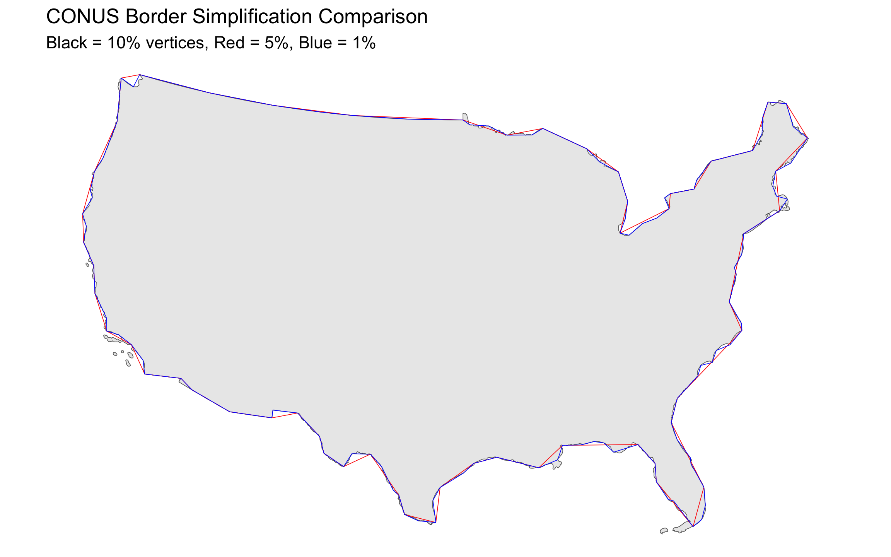
ImportantValidation Checkpoint (Optional)
After simplification, verify the boundary is still valid and covers all dams:
Code
# Check: Is the simplified boundary valid?
st_is_valid(conus1)
# Check: Does it still contain all of CONUS?
st_bbox(conus1) # Should cover roughly [-125, 24] to [-66, 49]
# Check: Visual comparison
plot(conus_border, main = "Original")
plot(conus1, main = "Simplified")
NoteSimplification: Boundary Only, Not Tessellation
Important distinction: This step simplifies the CONUS boundary container we use for clipping the tessellated surfaces. Simplification affects only the geometry of the clipping operation — it speeds up the intersection computation by reducing boundary vertices. Your tessellation tiles themselves remain high-resolution and unchanged. You are not simplifying the tessellation itself, only the container we clip with.
Once you are happy with your simplification, use the
mapview::nptsfunction to report the number of points in your original object, and the number of points in your simplified object.How many points were you able to remove? What are the consequences of doing this computationally?
Code
mapview::npts(conus_border)[1] 11292Code
# 11292 points
mapview::npts(conus1)[1] 114Code
# 114 points
# Removed 11178 points
# This is over a 90% reduction in oints which will speed up spatial analysis. The main consequence is that the simplified border may not capture finer detailed coastal features.- Finally, crop all four grids to the CONUS boundary—but using different methods:
- Voronoi & Delaunay (geometry-based tessellations): Use
st_intersection()to cut these geometries at the CONUS boundary. These tessellations create boundaries that extend well beyond CONUS; intersection actually trims them. - Hexagon & Square grids (regular grids): Use
st_filter()to keep only tiles that touch CONUS. These grids are already regularly aligned; filtering just discards edge tiles without modifying them.
- Voronoi & Delaunay (geometry-based tessellations): Use
Code
triangles <- st_intersection(triangles, conus1)
voronoi <- st_intersection(voronoi, conus1)
hex <- st_filter(hex, conus1)
gridded <- st_filter(gridded, conus1)
TipWhy Different Cropping Methods?
The distinction matters for your spatial analysis:
st_intersection()on Voronoi/Delaunay: Produces edges/boundaries that align precisely with the CONUS border. Tiles at the edge are cut, not discarded. This is geometrically accurate but creates irregular edge shapes.st_filter()on hexagon/square grids: Keeps only complete regular tiles that touch CONUS, discarding edge tiles. The boundary is a stair-step pattern following the regular grid.
In Q3, when you compare these tessellations, you’ll notice that Voronoi and Delaunay have denser tile coverage (e.g., ~2800–6200 tiles) because they extend to the exact boundary. Hexagons and squares have fewer tiles (e.g., ~1900–2000) because they’re bound to a regular grid. This difference affects spatial statistics: denser tessellations reveal finer-grained patterns; coarser tessellations show broader regional structure. This is part of the Modifiable Areal Unit Problem (MAUP).
Step 1.6
The last step is to plot your tessellations.
Code
plot_tes <- function(data, title){
ggplot() +
geom_sf(data = data, fill = "white", col = "navy", size = .2) +
theme_void() +
labs(title = title,
caption = paste("This tesselation has:", nrow(data), "tiles" )) +
theme(plot.title = element_text(hjust = .5, color = "navy", face = "bold"),
plot.caption = element_text(hjust = .5, color = "navy", face = "italic"))
}Step 1.7
Use your new function to plot each of your tessellated surfaces and the original county data (5 plots in total):
Code
plot_tes(voronoi, "Voronoi Tessellation (Cropped to Simplified U.S. Border)")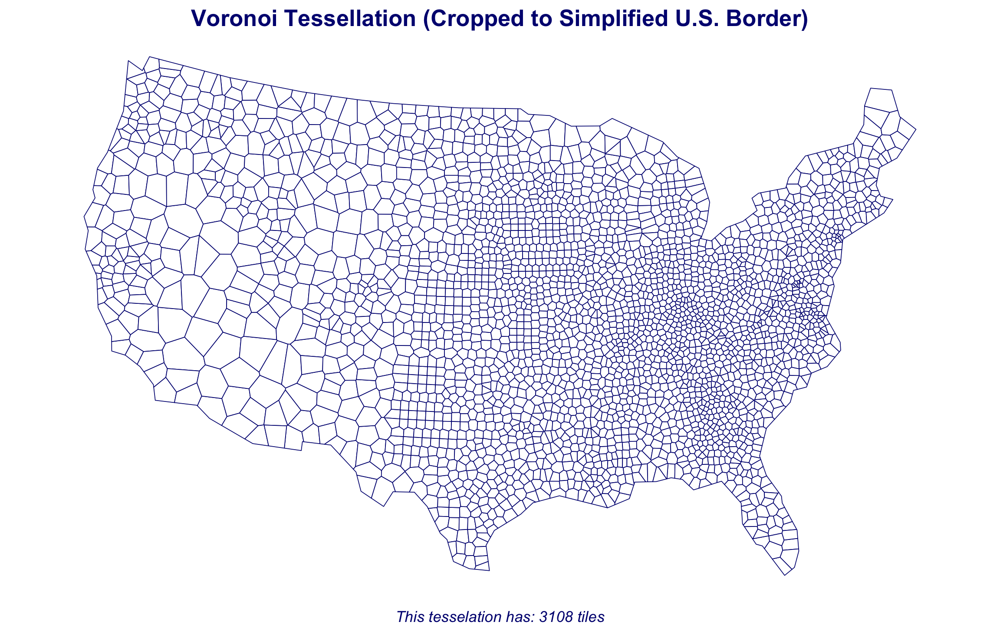
Code
plot_tes(triangles, "Triangulated Tessellation (Cropped to Simplified U.S. Border)")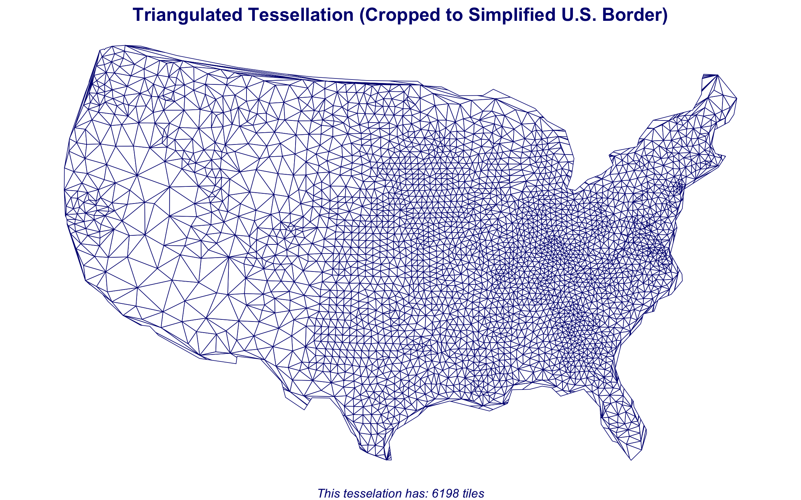
Code
plot_tes(hex, "Hexagonal Coverage (Filtered to Counties)")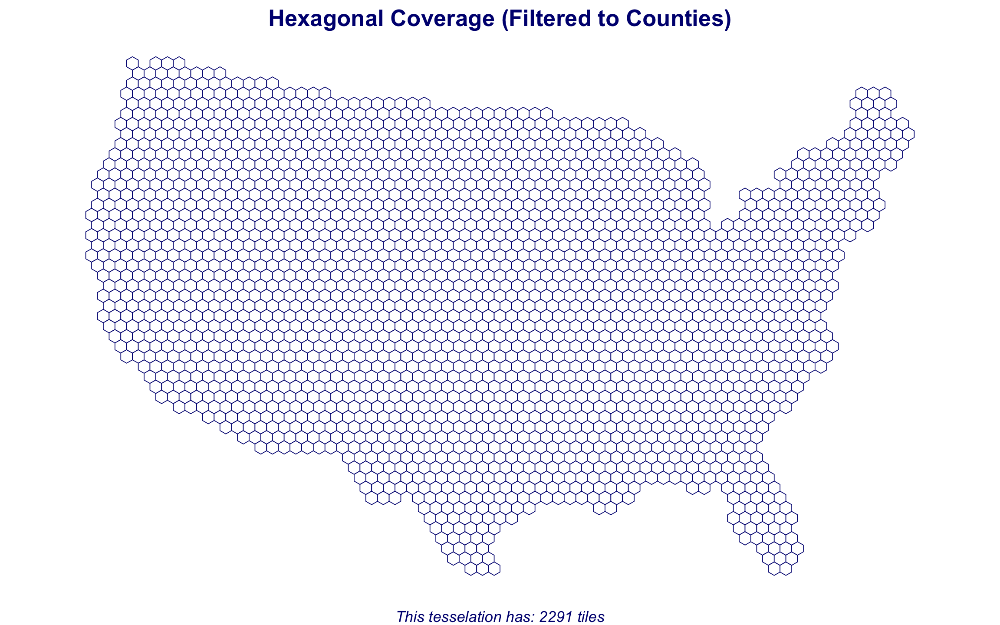
Code
plot_tes(gridded, "Gridded Coverage (Filtered to Counties)")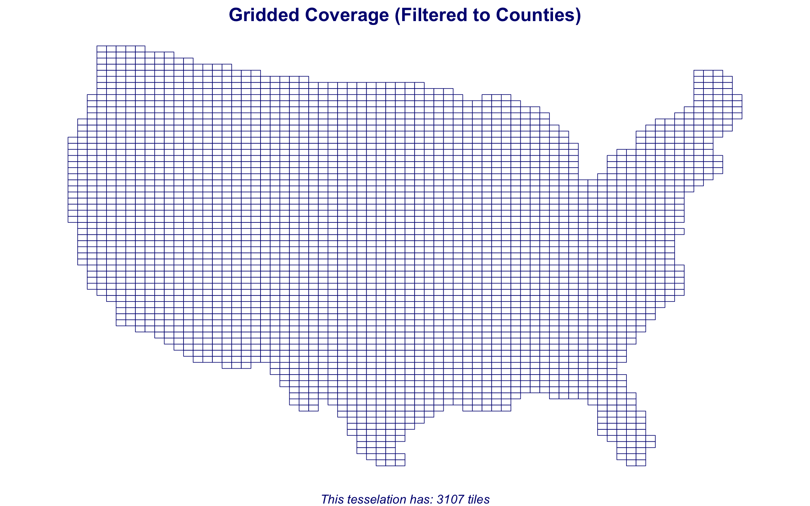
Code
plot_tes(counties_w_id, "County Boundaries")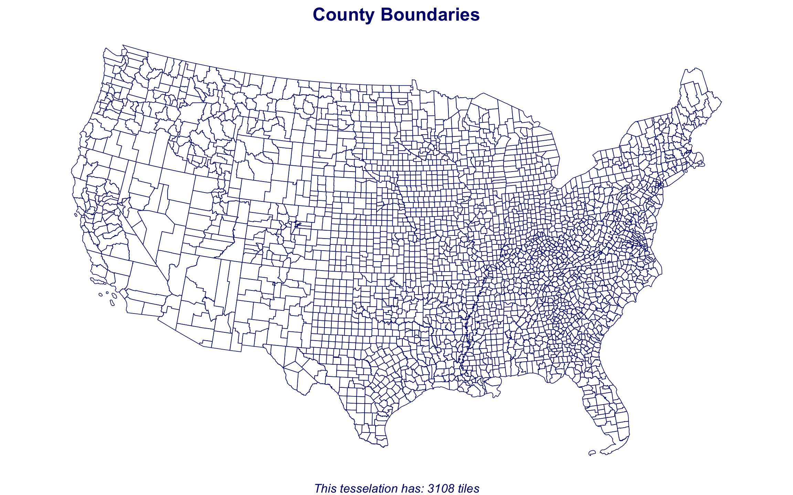
Question 2:
In this question, we will write out a function to summarize our tessellated surfaces.
Step 2.1
First, we need a function that takes a sf object and a character string and returns a data.frame.
For this function:
The function name can be anything you chose, arg1 should take an
sfobject, and arg2 should take a character string describing the objectIn your function, calculate the area of
arg1; convert the units to km2; and then drop the unitsNext, create a
data.framecontaining the following:text from arg2
the number of features in arg1
the mean area of the features in arg1 (km2)
the standard deviation of the features in arg1
the total area (km2) of arg1
Return this
data.frame
Code
sum_func <- function(data, type){
areakm2 = drop_units(set_units(st_area(data), "km2"))
data.frame(type = type, count = length(areakm2), mean = mean(areakm2), sd = sd(areakm2), tot = sum(areakm2))
}Step 2.2
Use your new function to summarize each of your tessellations and the original counties.
Step 2.3
Multiple data.frame objects can bound row-wise with bind_rows into a single data.frame
For example, if your function is called sum_tess, the following would bind your summaries of the triangulation and voroni object.
Step 2.4
Once your 5 summaries are bound (2 tessellations, 2 coverage’s, and the raw counties) print the data.frame as a nice table using knitr/kableExtra/flextable or your preferred table formatting package.
| Type | Elements | Mean Area (km²) | Standard Deviation Area | Coverage Area (km²) |
|---|---|---|---|---|
| Triangles | 6,198 | 1,291 | 1,599 | 7,999,856 |
| Voronoi | 3,108 | 2,602 | 2,908 | 8,086,096 |
| Hexagon | 2,291 | 3,781 | 0 | 8,662,681 |
| Gridded | 3,107 | 2,761 | 0 | 8,579,323 |
| Counties | 3,108 | 2,605 | 3,444 | 8,096,496 |
Step 2.5
Comment on the traits of each tessellation. Be specific about how these traits might impact the results of a point-in-polygon analysis in the contexts of the modifiable areal unit problem and with respect computational requirements.
Question 3: Dam Distribution Analysis & Tessellation Selection
The data we will analyze in this lab are from the U.S. Army Corps of Engineers National Dam Inventory (NID). This dataset documents ~91,000 dams in the United States and includes attributes such as design specifications, risk level, age, and purpose.
Dam management agencies face a critical question: Where are dams actually clustered, and how do I visualize that clustering in a way that supports infrastructure planning decisions? The answer depends on your choice of geographic boundaries—that is, your tessellation. Different tessellations will reveal different patterns of dam concentration. Your job in this question is to:
- Quantify dam distributions across multiple tessellation methods
- Understand how the modifiable areal unit problem (MAUP) creates different narratives from the same underlying data
- Select and justify the tessellation that best supports management decisions about dam clustering
For the remainder of this lab we will analyze the distributions of these dams using point-in-polygon analysis.
Step 3.1
In the tradition of this class - and true to data science/GIS work - you need to find, download, and manage raw data. THe NID dataset is available as a CSV download from the USACE website here. Grab the CSV.
- Return to your RStudio Project and read the data in using the
readr::read_csv- Use
janitor::clean_names()to standardize column names to snake_case (tidy data convention) - After reading the data in, be sure to remove rows that don’t have location values (
!is.na()) - Convert the
data.frameto asfobject by defining the coordinates and CRS - Transform the data to a CONUS AEA (EPSG:5070) projection - matching your tessellation
- Filter to include only those within your CONUS boundary
- Use
Code
# Prefer a local NID CSV named `nation.csv`; otherwise download to that filename
nid_url <- "https://nid.sec.usace.army.mil/api/nation/csv"
dir.create("data", showWarnings = FALSE)
nid_dest <- "data/nation.csv"
if (file.exists(nid_dest)) {
message("Using local NID file: ", nid_dest)
} else {
tryCatch({
message("Downloading NID CSV to: ", nid_dest)
download.file(nid_url, nid_dest, quiet = FALSE, mode = "wb")
}, error = function(e) {
message("NID download failed: ", e$message)
})
}
# read the CSV (will error if download failed and file missing)
if (!file.exists(nid_dest)) stop("NID CSV not found at ", nid_dest)
dams <- readr::read_csv(nid_dest, skip =1, show_col_types = FALSE) |>
janitor::clean_names()
usa <- AOI::aoi_get(state = "conus") |>
st_union() |>
st_transform(5070)
dams2 <- dams |>
filter(!is.na(latitude)) |>
st_as_sf(coords = c("longitude", "latitude"), crs = 4326) |>
st_transform(5070) |>
st_filter(usa)Step 3.2
Following the in-class examples develop an efficient point-in-polygon function that takes:
- points as
arg1, - polygons as
arg2, - The name of the id column as
arg3
The function should make use of spatial and non-spatial joins, sf coercion and dplyr::count. The returned object should be input sf object with a column - n - counting the number of points in each tile.
Code
pip_func <- function(points, polygon, var){
st_join(polygon, points) |>
st_drop_geometry() |>
count(get(var)) |>
setNames(c(var, "n")) |>
left_join(polygon, by = var) |>
st_as_sf()
}Step 3.3
Apply your point-in-polygon function to each of your five tessellated surfaces where:
- Your points are the dams
- Your polygons are the respective tessellation
- The id column is the name of the id columns you defined.
Code
voronoi_pip <- pip_func(dams2, voronoi, "id")
triangles_pip <- pip_func(dams2, triangles, "id")
hex_pip <- pip_func(dams2, hex, "id")
gridded_pip <- pip_func(dams2, gridded, "id")
counties_pip <- pip_func(dams2, counties_w_id, "id")Step 3.4
Lets continue the trend of automating our repetitive tasks through function creation. This time make a new function that extends your previous plotting function.
For this function:
The name can be anything you chose, arg1 should take an
sfobject, and arg2 should take a character string that will title the plotThe function should also enforce the following:
the fill aesthetic is driven by the count column
nthe col is
NAthe fill is scaled to a continuous
viridiscolor ramptheme_voida caption that reports the number of dams in arg1 (e.g.
sum(n))- You will need to paste character stings and variables together.
Code
plot_pip <- function(data, title){
ggplot() +
geom_sf(data = data, aes(fill = n), col = "NA") +
scale_fill_viridis_c() +
theme_void() +
theme(plot.title = element_text(face = "bold", color = "darkgreen", hjust = .5),
plot.caption = element_text(face = "italic", color = "darkgreen", hjust = .5),
legend.position = "none") +
labs(title = title,
caption = paste0("Total Number of Dams:", sum(data$n)))
}Step 3.5
Apply your plotting function to each of the 5 tessellated surfaces with Point-in-Polygon counts:
Code
v_p <- plot_pip(voronoi_pip, "Voronoi")
t_p <- plot_pip(triangles_pip, "Triangulated")
h_p <- plot_pip(hex_pip, "Hexagonal")
g_p <- plot_pip(gridded_pip, "Gridded")
c_p <- plot_pip(counties_pip, "Counties")Step 3.6
Policy Analysis: Tessellation and Decision-Making
Now that you have dam counts across all five tessellation methods, compare the results. Specifically:
a. Create a side-by-side visualization (faceted or small multiples) showing dam clustering under each of the five tessellations. Use patchwork or cowplot to arrange the 5 plots you created in Step 3.5 for direct visual comparison.
Code
patchwork::wrap_plots(v_p, t_p, h_p, g_p, c_p, ncol = 2) +
patchwork::plot_annotation(title = "Dam Clustering Across Tessellations"
)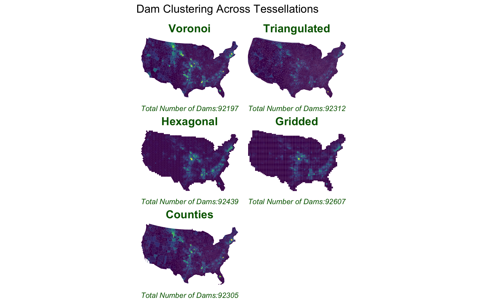
b. Identify 2–3 geographic regions where tessellation choice produces substantially different patterns (e.g., one method shows a clear hotspot while another shows diffuse distribution). For each region, describe the pattern difference and explain why the tessellation geometry creates divergent results. Reference the characteristics from your Q2 summary (number of tiles, mean area, standard deviation).
When comparing tessellations, differences in tile size and shape can lead to divergent patterns of dam clustering. One hotspot where tessalations generally disagree is the middle Missouri River basin. Whereas the Voronoi tessellation may show a clear hotspot of dams due to its larger tile shapes within this region, the other methods show a lighter, or no hotspot within this area. Juxstaposed to this is the Mississippi River Basin, where the voronoi, hexagonal, and gridded tessalations show a clear hotspot of dams. The aformentioned tessalations seem to have roughly similar tile sizes within this region. The one outlier is the trianglulated tessalation, which seem to have very small tiles within the Mississippi River Basin, which leads it to show a more diffuse distribution.
The single tessalation that I would recommend to a dam operations manager seeking to understand geographic clustering is the Counties tessalation, as this aligns with jurisdictional boundaries. Although th Voronoi tessalation shows clear hotspots of dams,, it is important to note that the Voronoi tessalation may not align with natural or management decision-making units, and it may create artificial boundaries that do not reflect real-world hydrologic regions. Simplification could affect the choice of tessellation; a coarser simplification might obscure important details, while a finer simplification could create too much noise. Ultimately, the counties tessellation is best for supporting managtement decisions.
Question 4
The NID provides a comprehensive data dictionary here. In it we find that dam purposes are designated by a character code.
These are shown below for convenience (built using knitr on a data.frame called nid_classifier):
| abbr | purpose |
|---|---|
| I | Irrigation |
| H | Hydroelectric |
| C | Flood Control |
| N | Navigation |
| S | Water Supply |
| R | Recreation |
| P | Fire Protection |
| F | Fish and Wildlife |
| D | Debris Control |
| T | Tailings |
| G | Grade Stabilization |
| O | Other |
In the data dictionary, we see a dam can have multiple purposes.
In these cases, the purpose codes are concatenated in order of decreasing importance. For example,
SCRwould indicate the primary purposes are Water Supply, then Flood Control, then Recreation.A standard summary indicates there are over 400 unique combinations of dam purposes:
Code
unique(dams2$purposes) |> length()[1] 574- By storing dam codes as a concatenated string, there is no easy way to identify how many dams serve any one purpose… for example where are the hydro electric dams?
To overcome this data structure limitation, we can identify how many dams serve each purpose by splitting the PURPOSES values (strsplit) and tabulating the unlisted results as a data.frame. Effectively this is double/triple/quadruple counting dams bases on how many purposes they serve:
The result of this would indicate:
Step 4.1
Your task is to create point-in-polygon counts for at least 4 of the above dam purposes:
You will use
greplto filter the complete dataset to those with your chosen purposeRemember that
greplreturns a boolean if a given pattern is matched in a stringgreplis vectorized so can be used indplyr::filter
For example:
Code
# Find flood control dams in the first 5 records:
dams2$purposes[1:5][1] "Recreation" "Recreation" "Other" "Other" "Water Supply"Code
grepl("F", dams2$purposes[1:5])[1] FALSE FALSE FALSE FALSE FALSEFor your analysis, choose at least four of the above codes, and describe why you chose them. Then for each of them, create a subset of dams that serve that purpose using dplyr::filter and grepl
Finally, use your point-in-polygon function to count each subset across your cropped tessellation from Q1.4 (e.g., hexagon_clipped or square_clipped).
Code
hydro_subset <- dams2 |> filter(grepl("H", purposes))
fire_subset <- dams2 |> filter(grepl("P", purposes))
water_supply_subset <- dams2 |> filter(grepl("S", purposes))
flood_control_subset <- dams2 |> filter(grepl("C", purposes))
h_pip <- pip_func(hydro_subset, counties_w_id, "id")
p_pip <- pip_func(fire_subset, counties_w_id, "id")
s_pip <- pip_func(water_supply_subset, counties_w_id, "id")
c_pip <- pip_func(flood_control_subset, counties_w_id, "id")Step 4.2
Now use your plotting function from Q3 to map these counts on the cropped tessellation.
But! you will use
gghighlightto only color those tiles where the count (n) is greater then the (mean + 1 standard deviation) of the setSince your plotting function returns a
ggplotobject already, thegghighlightcall can be added “+” directly to the function.The result of this exploration is to highlight the areas of the country with the most
Code
patchwork::wrap_plots(
plot_pip(h_pip, "Hydroelectric Dams") + gghighlight(n > (mean(n) + sd(n))),
plot_pip(p_pip, "Fire Protection Dams") + gghighlight(n > (mean(n) + sd(n))),
plot_pip(s_pip, "Water Supply Dams") + gghighlight(n > (mean(n) + sd(n))),
plot_pip(c_pip, "Flood Control Dams") + gghighlight(n > (mean(n) + sd(n))),
ncol = 2
) +
plot_annotation(title = "Hotspots of Dam Purposes",
subtitle = "Only tiles with counts above mean + 1 SD are highlighted")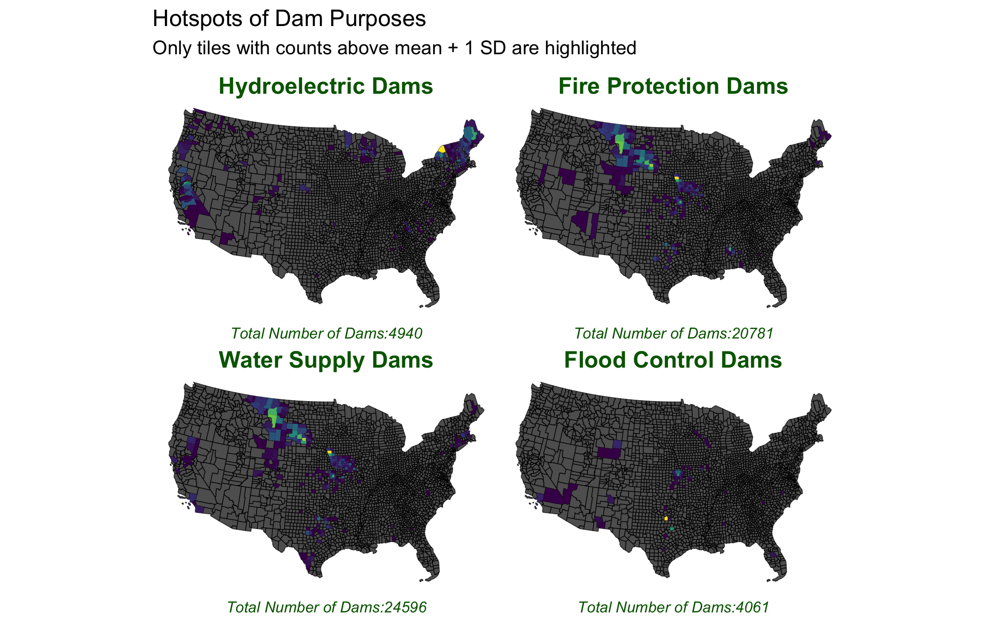
Step 4.3
Comment on the geographic distribution of dams you found. Does it make sense? How might the tessellation you chose impact your findings? How does the distribution of dams coincide with other geographic factors such as river systems, climate, etc?
The geographic distribution of dams serving different purposes varies across the country. For example, hydroelectric dams seem to be clustered in regions with significant elevation changes and river systems, such as along the Sierra Nevada mountains and Adirondack mountains. Fire protection dams appear to be more common in regions prone to wildfires, namely the mountain subregion around Montana, and also coincide with the geographic distribution of water supply dams. Flood control dams show primary clustering throughout the midwest along the Mississippi River, with a sparse spread in certain western and eastern states. The tessellation choice can impact the findings by influencing the spatial resolution of the analysis; for instance, a finer tessellation may reveal more localized hotspots, while a coarser tessellation may generalize patterns over larger areas.
Question 5: Spatial Correlation of Dam Attributes — Introduction to Spatial Regression
Step 5.1
Aggregate Dam Attributes by Tile
Produce visualizations showing spatial patterns:
Code
aggregated_dams <- st_join(counties_w_id, dams2) |>
group_by(id) |>
summarize(
n_dams = n(),
mean_year_completed = mean(year_completed, na.rm = TRUE),
mean_surface_area = mean(surface_area_acres, na.rm = TRUE)
) |>
ungroup() |>
st_as_sf()
aggr_dam_p1 <- ggplot(aggregated_dams) +
geom_sf(aes(fill = mean_year_completed), color = NA) +
scale_fill_viridis_c() +
theme_void() +
labs(title = "Mean Year Completed by Tile")
aggr_dam_p2 <- ggplot(aggregated_dams) +
geom_sf(aes(fill = mean_surface_area), color = NA) +
scale_fill_viridis_c() +
theme_void() +
labs(title = "Mean Surface Area by Tile")
aggr_dam_p3 <- ggplot(aggregated_dams) +
geom_sf(aes(fill = n_dams), color = NA) +
scale_fill_viridis_c() +
theme_void() +
labs(title = "Dam Count by Tile")
patchwork::wrap_plots(aggr_dam_p1, aggr_dam_p2, aggr_dam_p3, ncol = 1) +
plot_annotation(title = "Spatial Distribution of Dam Attributes")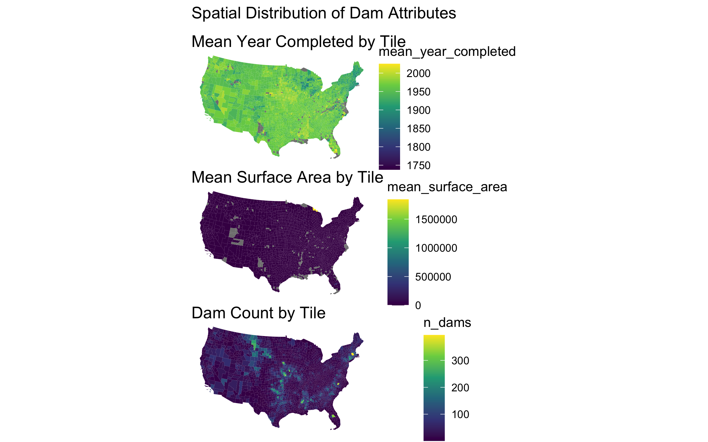
Older dams tend to cluster in the eastern U.S., while newer dams are more common in the western states. Larger surface area dams appear to be clustered in northern Michigan, while the majority of dams in the U.S. have relatively small surface areas. The dam count map reveals hotspots of dam density along major river systems, particularly in the Mississippi River basin, and within Appalachia.
Step 5.2
Neighbor Correlation: Local Spatial Variation
Code
# Suggested workflow (write your own implementation):
# 1) build vectors for count, age, and size attributes by tile
# 2) handle NAs explicitly before matrix multiplication
# 3) compute spatial lag as W_std %*% attribute
# 4) correlate each attribute with its lag
# 5) report values and classify as weak/moderate/strong with your own thresholdsCode
standardize_weights <- function(geometry_sf) {
if (any(!st_is_valid(geometry_sf))) {
geometry_sf <- st_make_valid(geometry_sf)
}
W <- st_touches(geometry_sf, sparse = FALSE)
diag(W) <- 0
W_std <- W / rowSums(W)
W_std[rowSums(W) == 0, ] <- 0
return(W_std)
}
spatial_lag_func <- function(attribute_vector, weight_matrix,
original_na_mask = NULL) {
if (is.null(original_na_mask)) {
original_na_mask <- is.na(attribute_vector)
}
global_mean <- mean(attribute_vector, na.rm = TRUE)
attribute_imputed <- ifelse(is.na(attribute_vector),
global_mean,
attribute_vector)
spatial_lag <- weight_matrix %*% attribute_imputed
spatial_lag <- as.vector(spatial_lag)
return(list(
lag = spatial_lag,
imputed = attribute_imputed,
na_mask = original_na_mask
))
}
# Usage:
W_std <- standardize_weights(aggregated_dams)
lag_result_n <- spatial_lag_func(aggregated_dams$n_dams, W_std)
lag_result_age <- spatial_lag_func(aggregated_dams$mean_year_completed, W_std)
lag_result_size <- spatial_lag_func(aggregated_dams$mean_surface_area, W_std)
cor_n <- cor(lag_result_n$imputed, lag_result_n$lag, use = "complete.obs")
cor_age <- cor(lag_result_age$imputed[!lag_result_age$na_mask],
lag_result_age$lag[!lag_result_age$na_mask], use = "complete.obs")
cor_size <- cor(lag_result_size$imputed[!lag_result_size$na_mask],
lag_result_size$lag[!lag_result_size$na_mask], use = "complete.obs")
sum(is.na(lag_result_n$lag))[1] 0Code
summary_table <- data.frame(
Attribute = c("Dam Count", "Mean Year Completed", "Mean Surface Area"),
Correlation = c(cor_n, cor_age, cor_size),
Strength = c(
ifelse(cor_n > 0.6, "Strong", ifelse(cor_n > 0.2, "Moderate", "Weak")),
ifelse(cor_age > 0.6, "Strong", ifelse(cor_age > 0.2, "Moderate", "Weak")),
ifelse(cor_size > 0.6, "Strong", ifelse(cor_size > 0.2, "Moderate", "Weak"))
)
) |>
knitr::kable(caption = "Spatial Lag Correlation Summary",
format.args = list(big.mark = ",", digits = 3)) |>
kableExtra::kable_styling("striped", full_width = T, font_size = 18)
summary_table| Attribute | Correlation | Strength |
|---|---|---|
| Dam Count | 0.7057 | Strong |
| Mean Year Completed | 0.6735 | Strong |
| Mean Surface Area | 0.0162 | Weak |
Code
count_vec <- aggregated_dams$n_dams
age_vec <- aggregated_dams$mean_year_completed
size_vec <- aggregated_dams$mean_surface_area
count_imputed <- ifelse(is.na(count_vec), mean(count_vec, na.rm = TRUE), count_vec)
age_imputed <- ifelse(is.na(age_vec), mean(age_vec, na.rm = TRUE), age_vec)
size_imputed <- ifelse(is.na(size_vec), mean(size_vec, na.rm = TRUE), size_vec)
W <- st_touches(aggregated_dams, sparse = FALSE)
diag(W) <- 0
row_sums <- rowSums(W)
row_sums[row_sums == 0] <- 1
W_std <- W / row_sums
lag_count <- W_std %*% count_vec
lag_age <- W_std %*% age_imputed
lag_size <- W_std %*% size_imputed
cor_count <- cor(count_vec, lag_count, use = "complete.obs")
cor_age <- cor(age_vec, lag_age, use = "complete.obs")
cor_size <- cor(size_vec, lag_size, use = "complete.obs")Summarize in a table:
Code
# Create a compact summary table with:
# - attribute name
# - correlation with spatial lag
# - qualitative strength label
# Then add a 1-2 sentence interpretation below the table.Code
summary_table <- data.frame(
Attribute = c("Dam Count", "Mean Year Completed", "Mean Surface Area"),
Correlation = c(cor_count, cor_age, cor_size),
Strength = c(
ifelse(cor_count > 0.5, "Strong", ifelse(cor_count > 0.2, "Moderate", "Weak")),
ifelse(cor_age > 0.5, "Strong", ifelse(cor_age > 0.2, "Moderate", "Weak")),
ifelse(cor_size > 0.5, "Strong", ifelse(cor_size > 0.2, "Moderate", "Weak"))
)
) |>
knitr::kable(caption = "Spatial Lag Correlation Summary",
format.args = list(big.mark = ",", digits = 3)) |>
kableExtra::kable_styling("striped", full_width = T, font_size = 18)
summary_tableStep 5.3
Code
lisa_quad_func <- function(attribute_vector, spatial_lag_vector) {
z_attr <- as.vector(scale(attribute_vector))
z_lag <- as.vector(scale(spatial_lag_vector))
quadrant <- case_when(
z_attr > 0 & z_lag > 0 ~ "HH",
z_attr < 0 & z_lag < 0 ~ "LL",
z_attr > 0 & z_lag < 0 ~ "HL",
z_attr < 0 & z_lag > 0 ~ "LH",
TRUE ~ NA_character_
)
return(list( z_attr = z_attr, z_lag = z_lag, quadrant = quadrant))
}Code
lisa_result <- lisa_quad_func(lag_result_n$imputed, lag_result_n$lag)
moran_data <- data.frame(
z = lisa_result$z_attr,
lag_z = lisa_result$z_lag,
quad = lisa_result$quadrant
)
ggplot(moran_data, aes(x = z, y = lag_z, color = quad)) +
geom_point(size = 2, alpha = 0.6) +
geom_hline(yintercept = 0, linetype = "dashed", color = "grey") +
geom_vline(xintercept = 0, linetype = "dashed", color = "grey") +
scale_color_manual(values = c("HH" = "#d73027", "LL" = "#4575b4",
"HL" = "#fee090", "LH" = "#91bfdb"),
na.value = "gray80") +
labs(title = "Moran Scatterplot for Mean Count",
x = "Standardized Attribute (z)",
y = "Standardized Spatial Lag (lag_z)",
color = "Quadrant") +
theme_minimal()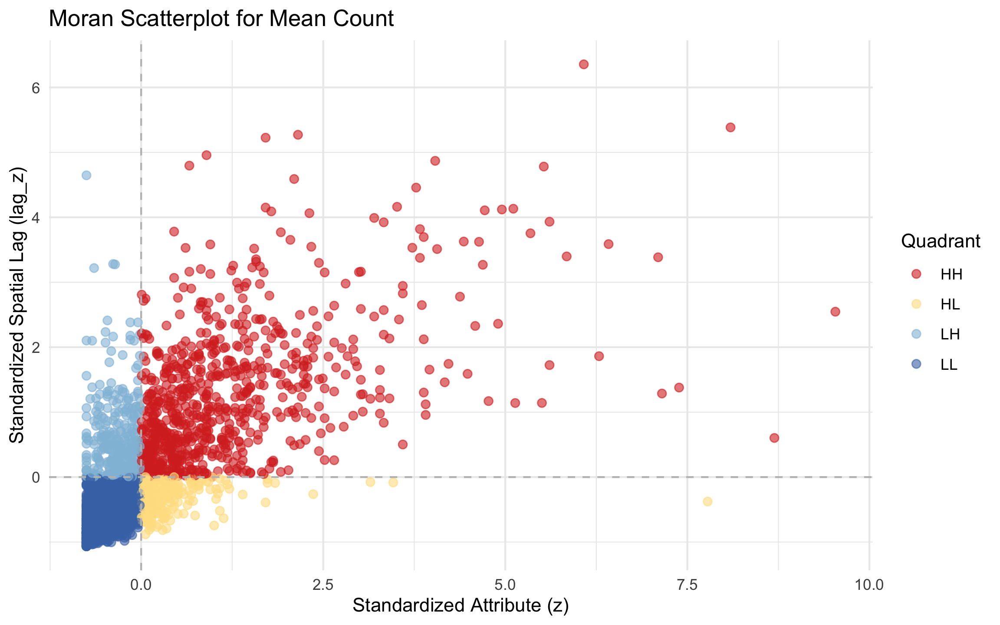
Step 5.4
Global Interpretation of Spatial Patterns
The spatial lag correlation results indicate that dam count exhibits a strong positive spatial autocorrelation, suggesting that tiles with higher dam counts tend to be near other tiles with higher counts. Mean year completed also shows a strong positive correlation. Mean surface area has a weak correlation, suggesting that large and small dams are more randomly distributed across the landscape. Overall, the results suggest that while there is some spatial dependence in dam count and age, size do not exhibit strong spatial autocorrelation.
The Moran scatterplot for mean count reveals a significant number of tiles in the High-High (HH) quadrant, indicating clusters of high dam counts surrounded by neighbors with similarly high counts. There is also a significant number of tiles in the Low-Low (LL) quadrant, suggesting areas with few dams are surrounded with similarly sparse neighbors. The High-Low (HL) and Low-High (LH) quadrants have fewer points, indicating that isolated clusters or outliers are less common. These patterns suggest that dam density is not randomly distributed but rather exhibits significant spatial clustering, likely influenced by geographic factors such as river systems.
The strong spatial autocorrelation in dam count and mean year completed suggests that neighboring tiles are genuinely similar in these characteristics. This clustering is likely driven by hydrologic factors such as river systems, which naturally concentrate dams along waterways, and management decisions. The weak correlation for mean surface area suggests that while dam density is clustered, the size of dams does not follow the same spatial pattern, possibly due to varying local needs and geographic constraints. Compared to the geographic distribution of dam purposes observed in Q4, the spatial autocorrelation analysis reinforces the idea that certain regions have concentrated infrastructure, influenced by natrural and human factors.
Question 6: Local Spatial Autocorrelation (LISA) — Mapping Hotspots and Coldspots
Step 6.1
Code
st_filter(hex_pip, conus1) |>
st_make_valid() -> hex_damsStep 6.2
Compute neighbors and spatial lag for your recommended tessellation:
Code
W_std_hex <- standardize_weights(hex_dams)
W_std_county <- standardize_weights(aggregated_dams)
lag_result_hex <- spatial_lag_func(hex_dams$n, W_std_hex)
lag_result_county <- spatial_lag_func(aggregated_dams$n_dams, W_std_county)
lisa_result_hex <- lisa_quad_func(lag_result_hex$imputed, lag_result_hex$lag)
lisa_result_county <- lisa_quad_func(lag_result_county$imputed, lag_result_county$lag)
hex_dams$z <- lisa_result_hex$z_attr
hex_dams$lag_z <- lisa_result_hex$z_lag
hex_dams$quad <- lisa_result_hex$quadrant
aggregated_dams$z <- lisa_result_county$z_attr
aggregated_dams$lag_z <- lisa_result_county$lag_z
aggregated_dams$quad <- lisa_result_county$quadrantStep 6.3
LOCAL Question: WHERE specifically are high-high, low-low, high-low, and low-high clusters? (Answer: Geographic map showing which regions belong to which quadrant)
Code
p_scatter_hex <- ggplot(hex_dams, aes(x = z, y = lag_z, color = quad)) +
geom_point(size = 2, alpha = 0.6) +
geom_hline(yintercept = 0, linetype = "dashed", color = "grey") +
geom_vline(xintercept = 0, linetype = "dashed", color = "grey") +
scale_color_manual(values = c("HH" = "#d73027", "LL" = "#4575b4",
"HL" = "#fee090", "LH" = "#91bfdb"),
na.value = "gray80") +
labs(title = "Moran Scatterplot for Hexagonal Tessellation",
x = "Standardized Dam Count (z)",
y = "Standardized Spatial Lag (lag_z)",
color = "Quadrant") +
theme_minimal()
p_map_hex <- ggplot(hex_dams) +
geom_sf(aes(fill = quad), color = NA) +
scale_fill_manual(values = c("HH" = "#d73027", "LL" = "#4575b4",
"HL" = "#fee090", "LH" = "#91bfdb"),
na.value = "gray80") +
labs(title = "LISA Map for Hexagonal Tessellation",
fill = "Quadrant") +
theme_void() +
theme(legend.position = "right")
p_scatter_hex + p_map_hex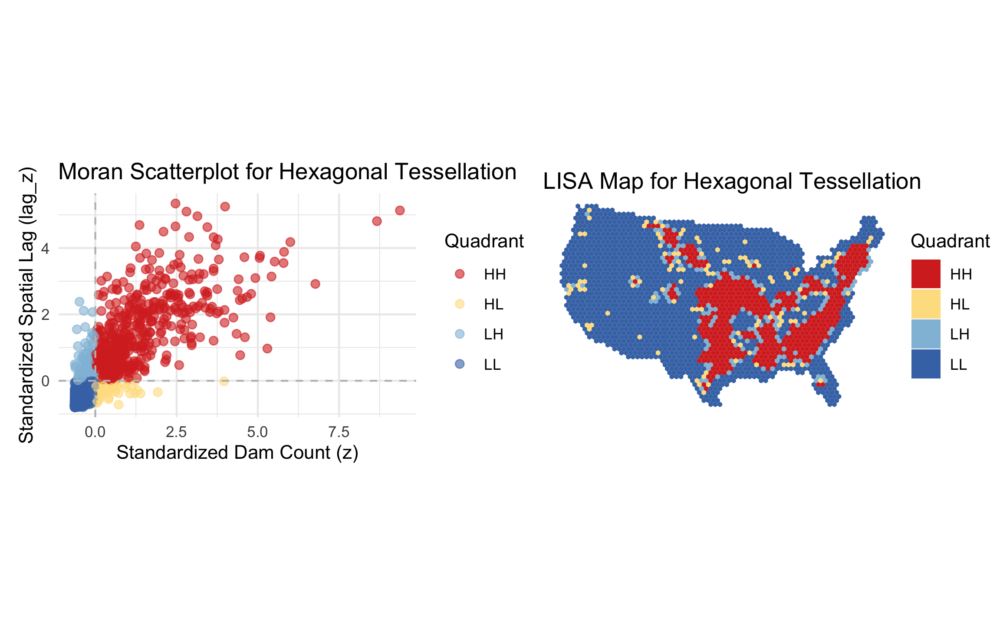
Step 6.4
Comparison with required county baseline:
Code
p_scatter_county <- ggplot(aggregated_dams, aes(x = z, y = lag_z, color = quad)) +
geom_point(size = 2, alpha = 0.6) +
geom_hline(yintercept = 0, linetype = "dashed", color = "grey") +
geom_vline(xintercept = 0, linetype = "dashed", color = "grey") +
scale_color_manual(values = c("HH" = "#d73027", "LL" = "#4575b4",
"HL" = "#fee090", "LH" = "#91bfdb"),
na.value = "gray80") +
labs(title = "Moran Scatterplot for Counties",
x = "Standardized Dam Count (z)",
y = "Standardized Spatial Lag (lag_z)",
color = "Quadrant") +
theme_minimal()
p_map_county <- ggplot(aggregated_dams) +
geom_sf(aes(fill = quad), color = NA) +
scale_fill_manual(values = c("HH" = "#d73027", "LL"
= "#4575b4", "HL" = "#fee090", "LH" = "#91bfdb"),
na.value = "gray80") +
labs(title = "LISA Map for Counties",
fill = "Quadrant") +
theme_void() +
theme(legend.position = "right")
p_map_county + p_map_hex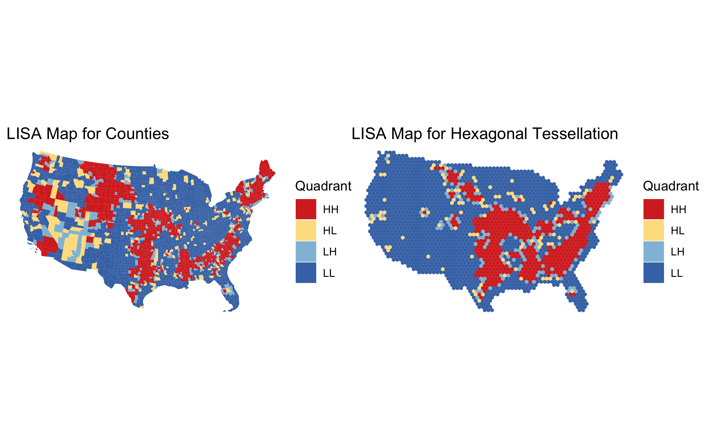
Code
table(hex_dams$quad)
HH HL LH LL
523 113 169 1486 Code
table(aggregated_dams$quad)
HH HL LH LL
756 232 317 1803 Quadrant distributions differ between the hexagonal tessellation and counties. The county tessalation shows a higher proportion of High-High (HH) and Low-Low (LL) tiles, indicating more localized hotspots of dam density, while the hexagonal grid contains a lower tile count overall. Furthermore, the hexagonal map shows larger HH clustering within the midwest and east coast, with LL spread throughout the west. Alternatively, the counties map shows laerger amounts of clustering for each quadrant category throughout the entire map. This difference is likely due to the MAUP effect: hexagons create uniform spatial units that can capture finer-scale clustering, while counties vary in size and may aggregate diverse areas.
Step 6.5
Geographic Interpretation and Management Implications
The HH hotspots of dam density are primarily concentrated along major river systems, such as the Mississippi River basin, the Tennessee Valley Authority (TVA) region, and the Colorado River Basin. These areas have historically been focal points for dam construction due to their strategic importance for flood control, hydroelectric power generation, irrigation, and water supply. For example, the TVA region has a high concentration of dams due to its role in providing electricity and managing water resources across multiple states. The Colorado River Basin’s clustering can be attributed to the need for water storage and management in an arid region with high demand. LL coldspots are often found in under-developed rural areas.
A few HL outliers are located throughout the west, representing isolated dams in otherwise low-density areas, potentially due to unique geographic factors. One outlier is the Big Tujunga Dam in California, which serves a specific local water supply need in an otherwise low-density region. LH tiles generally outline HH hotspots within the hexagonal tessellation, indicating areas where a high-count tile is surrounded by lower-count neighbors.
Tessalation choice significantly affects LISA conclusions due to the MAUP effect. The hexagonal tessellation captures larger, more uniform clusters of HH, while the county map reveals more fragmented hotspots and coldspots. The selection of a tessalation influences the identification of critical areas for management focus. For dam operations, the HH hotspots indicate regions where inter-state coordination is essential due to the high density of dams and shared water resources. LL coldspots may require less complex management policies but could also indicate areas with limited infrastructure that may need further analysis. The HL and LH outliers could indicate locations where local conditions deviate from regional patterns, warranting special attention for water management policies. LISA findings do not always cluster the same way when compared to dam purposes. For example, flood control dams clusters match HH patterns along the Mississippi River in the hex map, but fire protection and water supply dams match county clustering more closely.